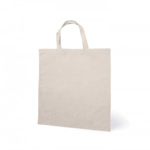
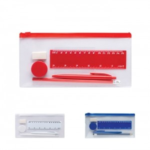

Em resumo
Um método para transformar o contexto do destinatário em perguntas e comparações claras, sem pressupostos comerciais. As famílias apresentadas são possibilidades a avaliar, não artigos obrigatórios.
Contexto em imagens


Destinatários e necessidades
Pessoa que prepara a proposta
Precisa de recolher o contexto de utilização, os destinatários e as condições que ainda não estão confirmadas.
Pessoa que avalia a proposta
Precisa de distinguir possibilidades editoriais, dados confirmados e questões por esclarecer.
Destinatários finais
As necessidades variam com a ocasião, o local e a forma de distribuição da proposta.
Ocasiões, locais e épocas
Recolha inicial do pedido
A ocasião destina-se a quem prepara a proposta e a clientes e pode decorrer em contextos como reunião, chamada ou documento de requisitos. O momento — antes de iniciar a comparação — ajuda a enquadrar o objetivo de perceber quem recebe, quando, onde e com que objetivo.
Comparação de famílias genéricas
A ocasião destina-se a quem avalia a proposta e a destinatários finais e pode decorrer em contextos como proposta ou sessão de avaliação. O momento — conforme o calendário do projeto; não existe um prazo universal — ajuda a enquadrar o objetivo de comparar utilidade, distribuição, personalização e pontos que ainda exigem confirmação.
Preparação de uma repetição ou nova edição
A ocasião destina-se à equipa responsável e pode decorrer em contextos como arquivo de versões e material de referência da própria organização. O momento — antes de cada nova decisão; não presumir que as condições anteriores se mantêm — ajuda a enquadrar o objetivo de identificar o que mudou e o que tem de ser reconfirmado.
Famílias de artigos a avaliar
Preparação da proposta
Objetivo
Explorar opções sem fechar prematuramente uma
escolha
Famílias a avaliar
Material de escrita, Sacos, Têxteis,
Artigos de hidratação
Comparação
Objetivo
Explicar diferenças relevantes para o contexto
Famílias a avaliar
Cadernos e material de organização,
Artigos para eventos, Artigos de identificação
Utilização e distribuição
- Use uma grelha curta: destinatário, ocasião, local, época, objetivo, família possível, personalização e questão por confirmar.
- Separe numa proposta aquilo que é uma possibilidade editorial do que foi confirmado por uma fonte atual.
- Não deduza preço, prazo, stock, quantidade mínima, margem, exclusividade ou compatibilidade a partir de uma família genérica.
- Ao reutilizar uma proposta, confirme novamente arte, quantidades, destinatários, local e condições aplicáveis.
O que confirmar antes de escolher
- Que informação sobre os destinatários está confirmada e o que continua por apurar?
- As opções estão descritas por família e finalidade, sem converter uma possibilidade numa promessa?
- A comparação separa factos documentados, sugestões editoriais e decisões comerciais?
- Que perguntas faltam sobre distribuição, variantes, personalização, data e local?
Perguntas frequentes
Como comparar duas famílias de artigos?
Relacione cada opção com os destinatários, a ocasião, o uso esperado e o modo de distribuição; registe também as questões por confirmar.
Uma proposta anterior pode ser reutilizada sem revisão?
Não assuma que as condições se mantêm. Reveja contexto, arte, variantes, quantidades, calendário e requisitos antes de a adaptar.